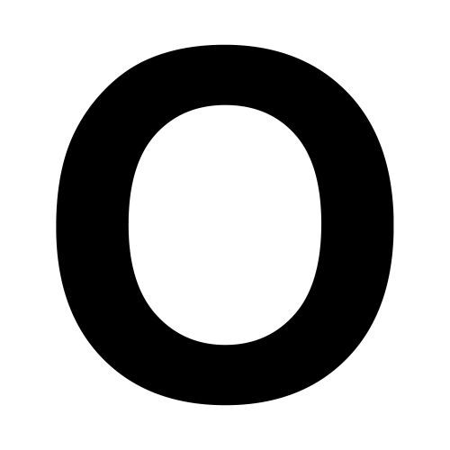

MAPI
Acrónimo del inglés Message Application Programming
Interface (Interfase de Programación de la Aplicación de Mensajes). Es un interfaz estándar en Windows que permite que diferentes programas de correos y otras aplicaciones que usen correos, por ejemplo procesadores de palabras y hojas de cálculo, puedan intercambiar mensajes entre ellos.
Mbone
Una red virtual "encima" del internet que soporta el
ruteo de paquetes IP multicast, que son usados para transmisiones multimedia y es de acceso público.
Mbps
Megabits por Segundo. Unidad de medida de la capacidad de
transmisión por una línea de telecomunicación donde cada megabit está formado por 1.048.576 bits.
NBA
NBA en inglés es Network Behavior Analysis (Analisis del
Comportamiento de la Red). Es un método de ampliar la seguridad de una red privada, mediante el monitoreo del tráfico de la misma, notando cualquier cosa rara que se salga de lo normal.
Nodo
Cada una de las computadoras individuales u otros
dispositivos de la red.
Nook
Lector de libros electrónicos de la librería
norteamericana, Barnes and Noble.

Octeto
Término utilizado para referirse a los ocho bits que
conforman un byte. No obstante, este término se usa a veces en vez de byte en la terminología de redes porque algunos sistemas tienen bytes que no están formados por 8 bits.
ODBC
Open Database Connectivity. Estándar de acceso a Bases de
Datos desarrollado por Microsoft cuyo objetivo es hacer posible el acceder a cualquier dato de cualquier aplicación, sin importar qué Sistema Gestor de Bases de Datos (DBMS por sus siglas en inglés) almacene los datos.
Open source
Código fuente abierto software libre, se refiere a un
programa cuyo código fuente está disponible al público general, gratis, para usar y modificar.